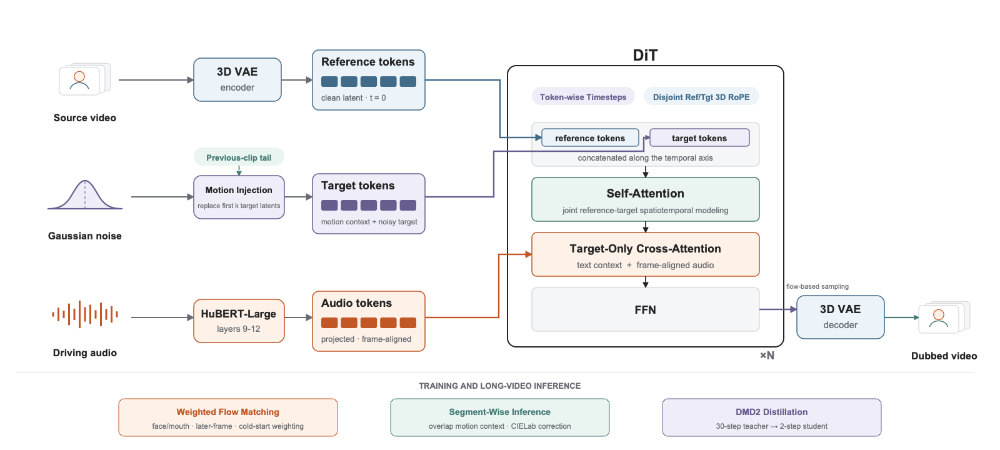

RESEARCH PROJECT · PREVIEW
TBDub: Production-Oriented Visual Dubbing
面向生产视觉配音的 X-Dub 任务自适应后训练与少步蒸馏
Team / Affiliation — to be updated
TBDub 在继承 X-Dub/Wan 生成主干的基础上，通过面向生产数据的任务自适应后训练与条件 DMD2 蒸馏，获得 30 步 Teacher 和 2 步 Student。
00
PROJECT OVERVIEW
Overview
项目背景、研究动机与面向实际视觉配音生产的核心优化方向。
PROJECT PROMISE
Identity-faithful.
Identity-faithful.
Temporally stable.
Robust & efficient.
从“生成同步嘴型”走向可用于真实内容生产的高保真、长时稳定、复杂场景鲁棒且高效的视觉配音。
RESEARCH SUMMARY · MOTIVATION
Beyond lip alignment:
Beyond lip alignment:
production-ready visual dubbing.
我们聚焦真实内容生产中反复出现的身份漂移、时序不稳定、复杂场景失效和跨域口型精度不足。
01
DEMOS & QUALITATIVE COMPARISON
Audio-driven video results
展示不同人物、语言、镜头尺度和动作条件下的唇形驱动结果。后续素材可持续补充。
02
METHOD
Method
TBDub 继承 X-Dub/Wan 的参考条件视频编辑主干，并以生产后训练与少步蒸馏完成任务适配。
端到端流程
参考视频 + 驱动音频 → 配音视频

完整参考视频通过联合 token 建模提供身份与时空上下文，帧对齐语音只驱动目标分支中的语音相关动态。
TRAINING & DISTILLATION
Production adaptation and two-step distillation
训练策略围绕“必须响应音频、重点优化口部、适应真实生产缺陷、降低推理成本”四个目标展开。
03
QUANTITATIVE RESULTS
Evaluation
在 38 个样本上评估口部重建质量、分布真实感、身份保持、口部响应幅度与音画同步。不同指标描述不同性质，需结合视频 Demo 联合解读。
↑ Higher is better
↓ Lower is better
↔ Edit magnitude only
GT LSE reference only
04
INFERENCE EFFICIENCY
Efficiency
两步 Student 在显著降低 DiT 计算量的同时，基本保持 Teacher 的生成质量与音画同步。
05
CITATION
BibTeX
论文发布后替换引用信息。